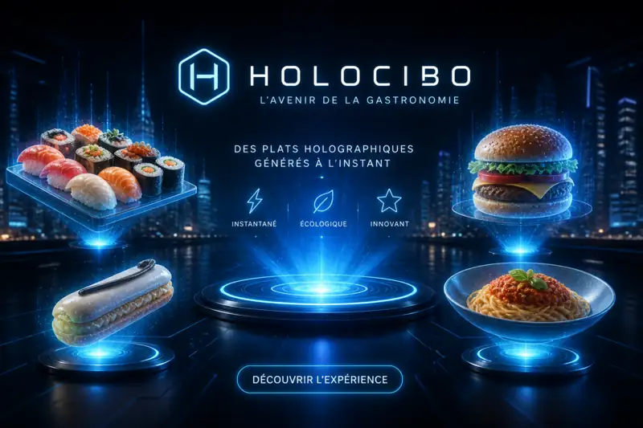
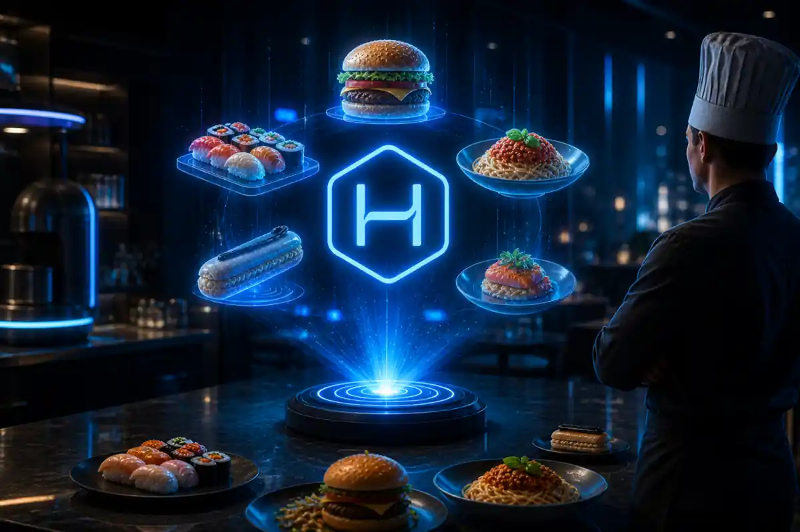
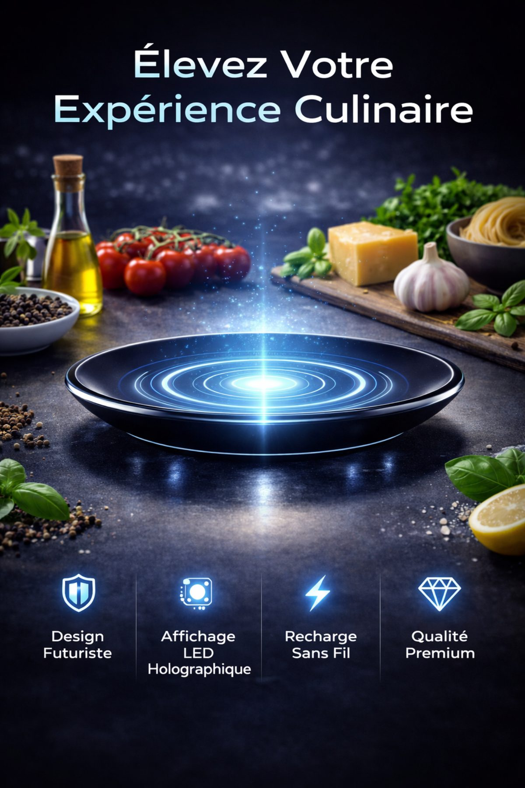
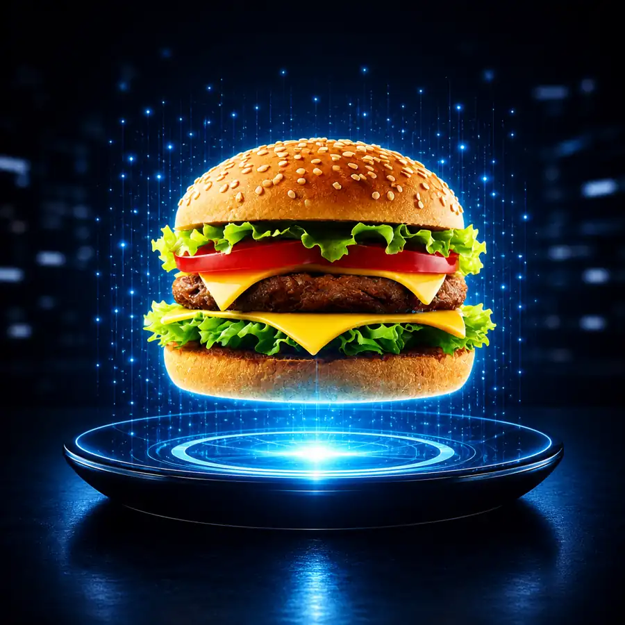
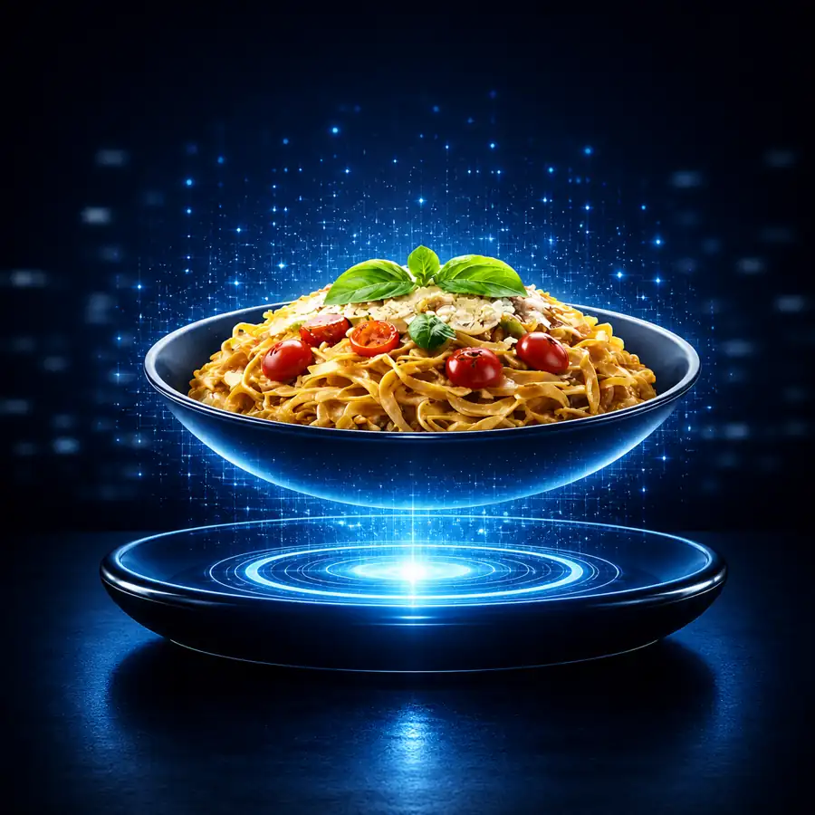

Retour au tableau des compétences

HoloCibo
Concevoir une présence en ligne futuriste, accessible et pensée pour le référencement naturel.
Sauvegarde du 03 mai 2026 vérifiée
Le projet
Transformer un concept fictif en expérience numérique cohérente
HoloCibo imagine un service de nourriture holographique générée à la demande grâce à une assiette dédiée. Ce concept volontairement futuriste m'a permis de construire une identité de marque forte et de travailler la mise en ligne d'une offre originale sur WordPress.
Le site repose sur une navigation simple, une direction artistique sombre et lumineuse, ainsi que des contenus structurés pour que l'utilisateur comprenne rapidement le produit, son fonctionnement et ses bénéfices.
Développement SEO
Une visibilité travaillée dès la conception
L'optimisation a été réalisée avec Yoast SEO afin d'améliorer la compréhension des pages par les moteurs de recherche et la lisibilité des contenus pour les visiteurs.
Structure des contenus
Organisation des pages avec une hiérarchie claire des titres et des textes centrés sur l'intention de recherche.
Balises essentielles
Travail des titres SEO et des méta-descriptions pour présenter chaque page de façon concise dans les résultats de recherche.
Lisibilité
Amélioration de la longueur des phrases, des paragraphes et des transitions à partir des recommandations de Yoast.
Exploration du site
Mise en place des éléments facilitant l'indexation, notamment le sitemap XML généré par l'extension SEO.
Direction artistique
Un univers futuriste et immersif
Le bleu électrique, les contrastes sombres et les projections holographiques donnent au projet une identité immédiatement reconnaissable et cohérente sur l'ensemble des pages.




Preuve technique
Une sauvegarde complète et exploitable
Le jeu de sauvegarde identifié correspond bien au projet HoloCibo. Il contient la base de données, les extensions, le thème, les médias et les fichiers complémentaires nécessaires à une restauration WordPress.
Les archives et la base de données restent volontairement hors du portfolio public afin de protéger les informations techniques.
Compétences
Retour au tableau des compétences